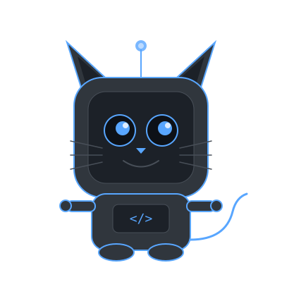

Klaus Kode is an AI agent that uses your excess Claude API credits to automatically find and solve GitHub issues on open source projects.

Klaus searches GitHub for beginner-friendly open source issues that match your preferences — or picks one automatically.
Using Claude's coding abilities, Klaus forks the repo, creates a branch, and implements a solution following the project's contributing guidelines.
Klaus self-reviews the changes, generates a clear PR description, and submits the pull request — donating your credits as code contributions.
The core agent — automatically solves GitHub issues using Claude credits. Dockerized pipeline with session resumption and structured logging.
github.com/nikste/klaus_kode → Computer VisionComputer vision pipeline for processing aerial image and LiDAR data. Automated geospatial analysis for infrastructure mapping.
www.lynxlabs.ai → Point CloudsRevived point cloud toolkit — a Python package for visualizing and processing 3D point cloud data.
github.com/nikste/pptk-revived →AI engineer with 10+ years building production computer vision and LLM systems. Open source contributor to TensorFlow, Apache Flink, and Open3D. Based in Berlin.
Previously co-founded 030Solutions (geospatial deep-tech), worked at TomTom on autonomous vehicle mapping, and researched distributed ML at DFKI.